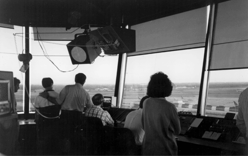

6.2 Requirements and Qualities
Given that air traffic control is highly visible, with huge amounts of commercial, government, and civilian interest, and given that it involves the potential loss of human life if it fails, its two most important quality requirements are as follows:
Ultrahigh availability, meaning that the system is absolutely prohibited from being inoperative for longer than very short periods. The actual availability requirement for ISSS is targeted at 0.99999, meaning that the system should be unavailable for less than 5 minutes a year. (However, if the system is able to recover from a failure and resume operating within 10 seconds, that failure is not counted as unavailable time.) High performance, meaning that the system has to be able to process large numbers of aircraft—as many as 2,440—without "losing" any of them. Networks have to be able to carry the communication loads, and the software has to be able to perform its computations quickly and predictably.
In addition, the following requirements, although not as critical to the safety of the aircraft and their passengers, are major drivers in the shape of the architecture and the principles behind that shape:
Openness, meaning that the system has to be able to incorporate commercially developed software components, including ATC functions and basic computing services such as graphics display packages The ability to field subsets of the system, to handle the case in which the billion-dollar project falls victim to reductions in budget (and hence functionality)—as indeed happened The ability to make modifications to the functionality and handle upgrades in hardware and software (new processors, new I/O devices and drivers, new versions of the Ada compiler) The ability to operate with and interface to a bewildering set of external systems, both hardware and software, some decades old, others not yet implemented
Finally, this system is unusual in that is must satisfy a great many stakeholders, particularly the controllers, who are the system's end users. While this does not sound unusual, the difference is that controllers have the ability to reject the system if it is not to their liking, even if it meets all its operational requirements. The implications of this situation were profound for the processes of determining requirements and designing the system, and slowed it down substantially.
The term sector suite refers to a suite of controllers (each sitting at a control console like the one in Figure 6.4) that together control all of the aircraft in a particular sector of the en route center's airspace. Our oversimplified view of ATC is now enhanced by the fact that aircraft are handed off not only from center to center but also from sector to sector within each center. Sectors are defined in ways unique to each center. They may be defined to balance the load among the center's controllers; for instance, less-traveled sectors may be larger than densely flown areas.
Courtesy of William J. Hughes Technical Center; FAA public domain photo.

The ISSS design calls for flexibility in how many control stations are assigned to each sector; anywhere from one to four are allowed, and the number can be changed administratively while the system is in operation. Each sector is required to have at least two controllers assigned to it. The first is the radar controller, who monitors the radar surveillance data, communicates with the aircraft, and is responsible for maintaining safe separations. The controller is responsible for managing the tactical situation in the sector. The second controller is the data controller, who retrieves information (such as flight plans) about each aircraft that is either in the sector or soon will be. The data controller provides the radar controller with the information needed about the aircraft's intentions in order to safely and efficiently guide it through the sector.
ISSS is a large system. Here are some numbers to convey a sense of scale:
ISSS is designed to support up to 210 consoles per en route center. Each console contains its own workstation-class processor; the CPU is an IBM RS/6000. ISSS requirements call for a center to control from 400 to 2,440 aircraft tracks simultaneously. There may be 16 to 40 radars to support a single facility. A center may have from 60 to 90 control positions (each with one or several consoles devoted to it). The code to implement ISSS contains about 1 million lines of Ada.
In summary, the ISSS system must do the following:
Acquire radar target reports that are stored in an existing ATC system called the Host Computer System. Convert the radar reports for display and broadcast them to all of the consoles. Each console chooses the reports that it needs to display; any console is capable of displaying any area. Handle conflict alerts (potential aircraft collisions) or other data transmitted by the host computer. Interface to the Host for input and retrieval of flight plans. Provide extensive monitoring and control information, such as network management, to allow site administrators to reconfigure the installation in real time. Provide a recording capability for later playback. Provide graphical user interface facilities, such as windowing, on the consoles. Special safety-related provisions are necessary, such as window transparency to keep potentially crucial data from being obscured. Provide reduced backup capability in the event of failure of the Host, the primary communications network, or the primary radar sensors.
In the next section, we will explore the architecture that fulfilled these requirements.
|